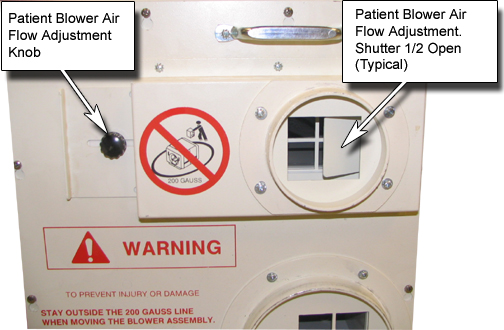

Operating Documentation
Direction 5500113, Rev# 3
Discovery MR750 3.0T Service Methods
Module Version 1.0, Version Date 4/25/07
Operating Documentation |
| Required Persons | Preliminary Reqs | Procedure | Finalization |
|---|---|---|---|
| 1 | Not Applicable | 5 mins | Not Applicable |
An adjustment is provided to regulate the airflow for patient comfort. This adjustment flap may be set between ¼ and full open position based on ambient room temperature and the customer’s preference. The full open position provides maximum airflow to the patient. To adjust the airflow loosen the knob and slide the shutter to the desired position.
Tighten the knob to hold the shutter securely in the desired position. See Illustration 1 for details.
Illustration 1: Patient Blower Adjustment

No finalization steps.